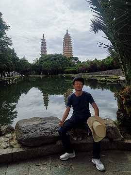
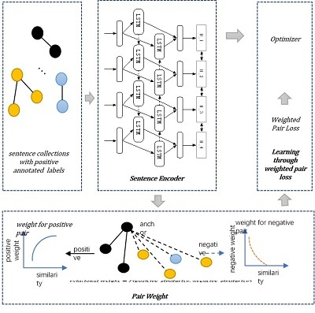
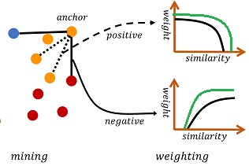
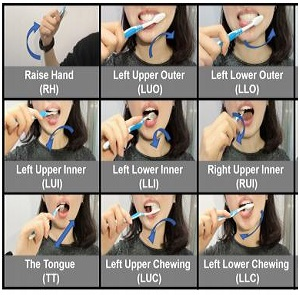
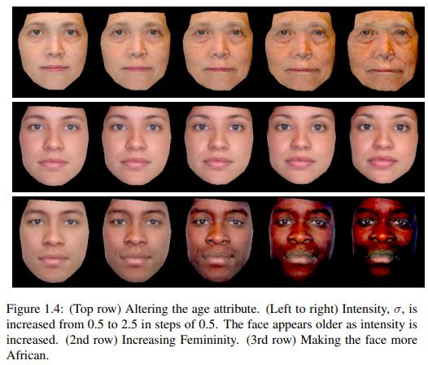
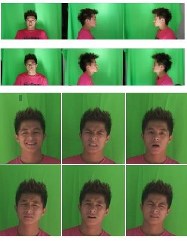
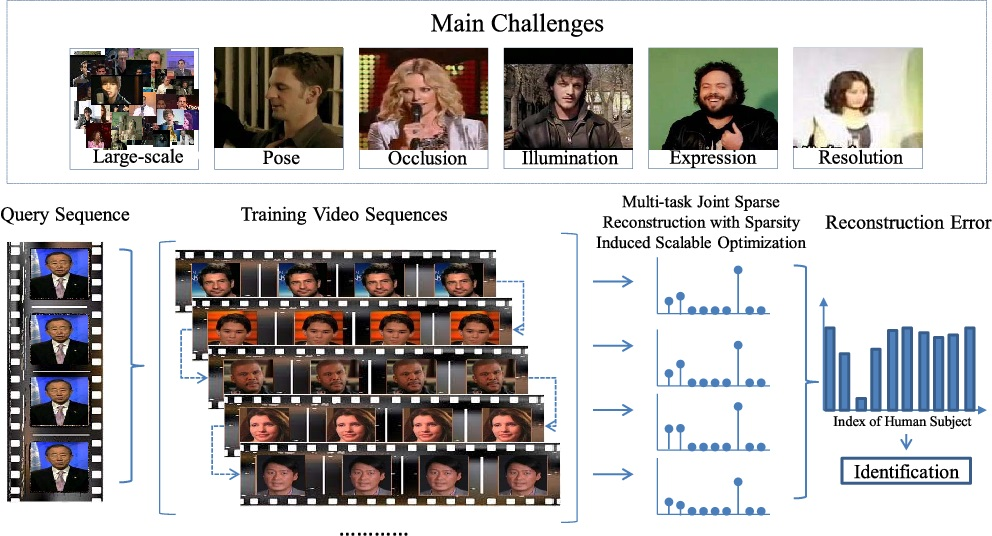

|
Zhang Li (张力)
Senior Research Engineer and Team Lead |
 |
Short Bio
I obtained my Ph.D degree, major in machine learning and computer vision, from School of Computing, National University of Singapore (NUS), where I was supervised by by Prof Terence Sim. Before joining Alibaba, I was leading a research group in Mozat for two years, a local internet firm in Singapore. Up to date, I was granted five patents with over ten publications shown in my google profile. I'm severing as the local organizer in Alibaba for CCKS and an adjunct supervisor in ShenZhen university. I am co-editing a book in Chinese, "Knowledge Graph: from theory to pratice".
My research aims at exploiting deep learning on multi-modality data including text, image and video for face recognition, fashion analysis and geographic service to build domain-specific knowledge graph.
Education
•Aug 2010~May 2015 - Ph.D, Computer Science, National University of Singapore, supervised by Prof Terence Sim.
•Sep 2006~July 2010 - Bachelor, Computer Science, HuaZhong University Science & Technology with first rank honor.
Working Experience
•Nov 2017~now - Senior Algorithm Engineer & Team Lead, Alibaba Group. I'm leading a team to use computer vision and language processing to provide geographic based data service on middle platform to multiple partners, such as Fliggy, Eleme, Koubei, Taobao and Tmall.
•June 2015-Nov 2017 - Head of R&D, Mozat Pte Ltd. I set up the team and lead the team to develop in-depth image and text understanding techniques to understand fashion. Our product, Stylepedia, was once ranked 1st in Google Play and App Store under lifestyle track.
Awards
•Excellent Staff in Alibaba(10/~1000) during 2018~2019. See photos.
•Excellent Performance in Mozat during 2016 & 2017
•Best Student Paper Honorable Mention Award in Face and Gesture 2013
•The Second Rank Award in Action Recognition Competition in ICPR 2012
•Meritorious Winner in MCM Contest in 2009
•National Scholarship in 2007~2009
{kind=link}
Projects
We built a system on cloud platform, Dataworks, to generate standard point of interest in billion-level. This system can solve many problems: a) correct exsiting data b) enrich attributes of exiting data c) provide new data. This project has improved data quality in Fliggy (from 3M to 10M, accuracy from 58% to 98%), merchant settle-in efficency in Tmall (200+% improvement) and gained over 100 million direct GMV through hotel reservation. We also use this system to serve for Koubei, Alipay and Eleme.
My role in this project to design the architure of this big data processing pipeline and develop critical algorithm components. Two papers are written and two patents are granted in this project.
Algorithm: Word Embedding (Skip-Gram, CBow, Glove, FastText, Elmo), Sentence Embedding, Text Classification, Image Athestic Model
Existing address filling in Taobao is purely through text, while this is time-consuming for customers. Moreover, in local life business, they require very accurate location to optimize their logistic distribution. Since the text from the customers is unconstrained, the noise is usually very heavy. We built an intelligent system that can help user filling address via simple text pasting and smart poi list recommendatation. We serve for Taobao, Tmall, Taoxianda and Maochao. Our address average parsing accuracy is 96% and poi ctr can improve 2%. We have accumulated 1.4 milllion building with over 99% accuracy. One paper is under writing and one patent is granted
My role in this project is to develop algorithm components, such as address parsing and address matching.
Technique: Sequence Labeling(HMM, CRF, BiLSTM-CRF etc), Pretrain Language Model
We provide a framework to generate short video for point of interest through merchant raw input and user comments. The main challenge is unconstrained text and unconstrained image from merchant, while customer only focus on certain part of the sellpoints. We develop image-text matching model that can extract high-quality text and athestic image to serve hotel merchant through text generation and cross modality matching with ConceptNet. This system has been integrated into hotel release system. The overall accept rate for the synthesized video is 70%. See demos here. A patent is granted.
Technique: Image Athestic Evaluation, ConceptNet for Image-Text Matching, Text Genaration
We propose to Download Stylepedia app and see details, or visit here.Internet.
We develop fashion parsing service with Django with Nginx framework. The service packages includes hash-tag recognition (OCR), fashion garment detection(SOLO, FasterRCCN, YOLO etc) and image classification (GoogleNet, Residual Network, VGG etc) and keypoint based try-on synthesis. The mAP can be up to 0.60 for typical fashion garments and the classification accuracy can be 0.95%.
Technique: Image Detection, Image Classification, Moving Least Square Warpping
We developed different image editing and face analysis tools for the users. For realistic effect, we develop face detection and possion image editing algorithm to perform the synthesis. The overall user accept rate is 95%. For mango style, we use landmark detection to exaggerate the most significant face features. For face makeup, we develop a layer seperation and image warpping technique to get quite satisfying results (over 86% accept rate). These techniques were applied on Shabik, a leading chatting app in Middle East.
{kind=link}
{kind=link}
Publications
|  |
|  |
|  |
|  |
|  |
|  |
Books
• Knowledge Graph: From Thoery to Practice. Mechanical Press. To Be Appeared.Patents
•A Short Video Clips Based Visual Storytelling System Through Entity Summary. CN Patent No: 101247162•Hotel Availability Prediction System Via Reinforcement Learning. CN Innovation No: 101052124
•An Automatic Point of Interest Production System Through Entity Alignment. CN Innovation No: 100617702
•A Knowledge Graph Based Inference Framework. CN Innovation No: 100830983
•A Trip Planner Through Point Network. CN Innovation No: 100830652
Activity
•Member of local organizer of CCKS and Yunxi Conference in 2019{kind=link}
{kind=link}
•Invited talk at NanJing University, by Prof. Zheng in Oct 2018.
•Invited talk at ShenZhen University and be an adjunct master advisor, by Prof. Luo in Dec 2017
•Invited talk at Premia AGM, Singapore in 2013
•Student member of Pattern Recognition and Machine Intelligence Association (PREMIA) in 2012
•Teaching Assistant of Computer Vision and Pattern Recognition in 2013
•Teaching Assistant of Uncertainty Modeling in AI in 2012
Expertise
•Deep Learning Framework of Caffe in depth, Pytorch•Python and C/C++
•Git, Basic Shell, Django, Latex